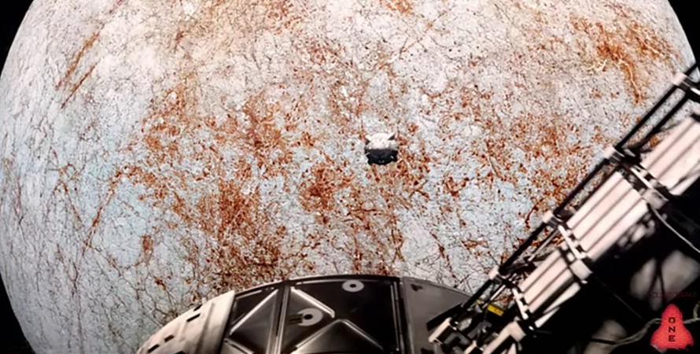
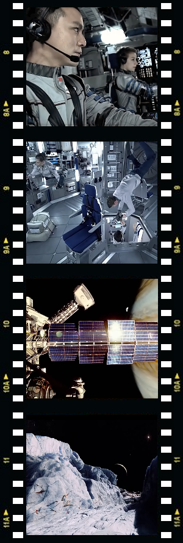
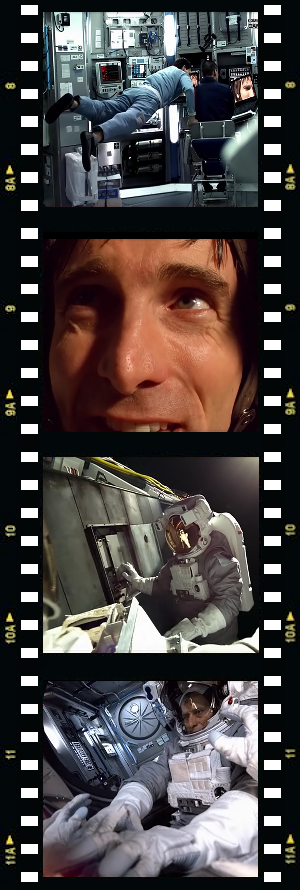

Science Fiction as a genre is notoriously difficult to define, as it includes a wide range of subgenres and themes. I would however argue, that all science fiction stories can be principally divided into two main categories: 1) highly probable and 2) highly improbable. The former was defined by Robert A. Heinlein, one of the greats of the genre as: "realistic speculation about possible future events, based solidly on adequate knowledge of the real world, past and present". The latter is pure imaginative speculation as defined by subgenres of Speculative Fiction and Science Fantasy. Europa Report belongs firmly to the first group, the category which can be described also as 'Hard Core' science fiction.
Science Fact: Europa, one of the moons of Jupiter, recently became a focus of the attention of all astrobiologists, and for a very good reason: the surface of this moon is composed of water ice, and there are indications that a water ocean exists beneath it. Existence of the subsurface ocean on this icy moon of Jupiter means that Europa has emerged as a primary location in the Solar System in terms of the potential habitability and the possibility of hosting extraterrestrial life. Until the 1970s, life, at least as the concept is generally understood, was believed to be entirely dependent on the energy from the Sun. In 1977 however, during an exploratory dive to the Galapagos Rift, scientists discovered deep-sea colonies of giant tube worms, clams, crustaceans, mussels, and other assorted creatures, clustered around undersea volcanic features known as black smokers. These creatures thrive here despite having absolutely no access to sunlight, and they evolved here the whole new ecosystem based on an entirely different food chain. This discovery completely revolutionised the study of biology by revealing that life need not be sun-dependent and opened the possibility that Europa too could harbour life, where similar ecosystems could exist clustered around hydrothermal vents on the floor of Europa’s ocean.
Europa Report takes this premise one step further, by exploring a scenario where in the near future six astronauts embark on a first manned mission to Europa, to confirm whether life really exists within the subsurface ocean of this Jupiter’s icy moon.
The mission is conceived by Europa Ventures, a privately funded space exploration company, whose CEO Dr. Samantha Unger presents the story of the ill-fated Europa One expedition in retrospective, by means of a found footage video log.
The crew of Europa One consist of Mission Commander Dun ‘William’ Xu, Pilot & Archivist Rosa Dasque, Chief Science Officer Daniel Luxembourg (Christian Camargo), Science Officer & renowned expert in Marine Biology Katya Petrovna, Chief Engineer Andrei Blok (Michael Nyqvist) and Engineer James Corrigan (Sharlto Copley).
When after six months of mission time a solar storm hits the ship and knocks out communication with the mission control, Blok and Corrigan are required to perform a spacewalk in order to repair the faulty communication system from outside. An unfortunate accident causes contamination of the Corrigan's suit with hydrazine, a highly toxic compound found in spaceship fuel. Corrigan dies outside the ship while it continues on its journey to Europa.
Communication is not restored, but the rest of the mission passes without any further major incidents and after twenty months of the flight time the spacecraft lands safely on Europa, even though missing the intended landing zone. Notwithstanding this minor setback, the crew begins the search for the subsurface ocean and the primitive life it is thought to harbour.
The astronauts drill through the ice and release a probe into the underlying body of water. Blok, whose sleep-deprivation is a major source of concern for the rest of the crew, claims observing a light outside the ship. However, he is unable to back his observation by a video recording, so the rest of the crew remains unconvinced.
After the submersible probe is struck by a mysterious illuminated object and contact with it is lost, Petrovna insists on going out and manually collecting samples on Europa's surface. As her communication with the lander is disrupted by the ever increasing radiation levels, Petrovna sees a blue light in the distance and decides to investigate further. As she approaches the light glowing through the ice, the surface ice below her feet collapses and Petrovna falls through to her watery death.
The devastated remainder of the crew decides to terminate the mission and leave the moon, but the engines of the lander malfunction and the ship hurtles back to Europa's surface. In an ironic twist of fate, the spaceship crashes at the originally intended landing site. Xu, who unbuckled from his seat during the rapid descent to eject the lander’s heat shield in order to reduce the speed of the impact, is killed. The ship is terminally damaged and, leaking oxygen and rapidly losing heat, begins to sink into the ice.
Blok and Luxembourg exit the lander with the aim to carry out repairs outside the spacecraft, but, one-by-one, break through the ice and perish in an attempt. Just before he dies, Blok manages to fix the communication system.

The last surviving member of the crew, Dasque, re-establishes communication with the Earth and transmits all the collected scientific data and video logs that have been recorded during the months of the communication blackout to the mission control. Knowing that she has no means to return to the Earth and that she will die regardless, Dasque opens the airlock below her feet to let the water in, to satisfy her curiosity as a scientist and to see what lurks in the depths of Europa’s ocean.